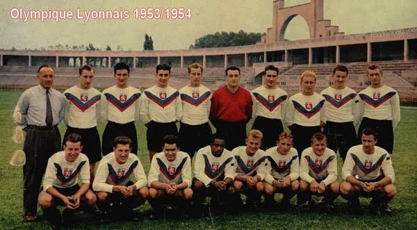

Historia y Leyenda
El club Lyon Olympique Universitaire (LOU, Universidad Olímpica de Lyon) se formó en 1896, de acuerdo con muchos partidarios y los historiadores del deporte, pero no se estableció a nivel nacional como un club profesional. En 1950 vio la fundación oficial del Olympique Lyonnais, por disidentes del LOU que querían hacer un club profesional de nivel nacional en Lyon. Su período más exitoso ha sido los años 2000. El club ganó su primer campeonato de la Ligue 1 en 2002, iniciando una racha récord de siete títulos nacionales consecutivos. El Lyon también ostenta en su palmarés ocho Trofeos de los Campeones, cinco Copas de Francia, una Coupe de la Ligue, y tres Campeonatos de la Ligue 2. Ha aparecido en la UEFA Champions League en once ocasiones y durante la temporada 2009-10 llegó a las semifinales de la competición por primera vez después de tres apariciones anteriores en los cuartos de final. El Lyon era un miembro del G-14 grupo de clubes líderes europeos de fútbol y son miembros fundadores de su sucesora, la Asociación de Clubes Europeos. El presidente del Lyon es Jean-Michel Aulas. El club es dirigido por Laurent Blanc. El OL es uno de los clubes más populares de Francia. Alrededor de un 11 % de la población del país apoya al club, esto es cerca de 7 millones de personas. Es, por tanto, el tercer equipo más seguido en Francia, por detrás del Olympique de Marsella y el Paris Saint-Germain respectivamente. Además, fue el club más rico del país en la temporada 2008-09, en la que generó un flujo de ingresos anuales de 139,6 millones de euros de acuerdo a los contadores Deloitte. Posee un equipo femenino (OL Lyonnes), cuyos éxitos son superiores a los de su par masculino en el plano local, siendo el club más laureado de Francia, consiguiendo 18 Ligas (récord), 10 Copas de Francia (récord) y 3 Supercopas de Francia (récord), y en Europa son aún mayores sus éxitos coronándose en 8 ocasiones, 5 de ellas consecutivas de la Liga de Campeones Femenina de la UEFA (2016, 2017, 2018, 2019 y 2020), siendo el club más laureado en la máxima competición continental. Esto convirtió al equipo femenino en un gigante a nivel europeo y mundial.
